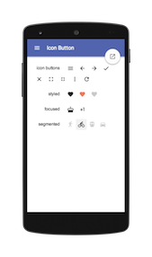
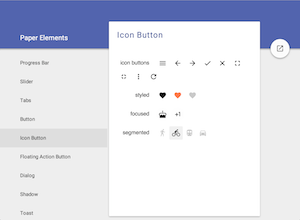
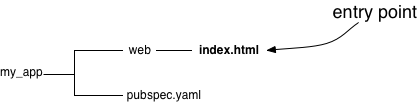
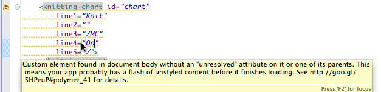

Polymer.dart

Use polymer.dart—a Dart port of Polymer—to build structured, encapsulated, client-side web apps with Dart and web components.
 
With polymer.dart, you can:
- Use Polymer custom elements.
- Design your own HTML tags to encapsulate style, structure, and behavior.
- Create live, two-way bindings between Dart objects and DOM nodes.
- Use emerging web standards—Custom Elements, HTML Imports, Shadow DOM, and more—today.
Where to start
You can get a quick start with any of the following:
- Polymer Dart Code Lab
- Follow this if you like to learn by coding. This code lab walks you through building a single-page admin console and the custom elements that it requires.
- Tutorial: Define a Custom Element
- Read this if you like a more structured walkthrough. This tutorial provides a detailed introduction to using polymer.dart to create custom elements.
- Frequently Asked Questions (FAQ)
- Get the answers to common questions about polymer.dart. This page has up-to-the-minute information that hasn’t yet made its way into the documentation.
Still here? Keep reading!
Structuring your app
Apps that use polymer.dart follow the
pub package layout conventions.
As a consequence, the source code for a polymer.dart app
starts with a top directory containing a
pubspec.yaml file and a web directory:

The web directory contains HTML files that are
entry points—pages that users can visit.
Other files (Dart files, CSS, images, and so on)
can also be in the web directory.
The pubspec.yaml file has metadata about the app,
such as the pub packages that it depends on.
Learn more at Imports and Your App’s Directory Structure.
Installing polymer.dart
Get polymer.dart from pub.dartlang.org, the Dart package hosting service.
Edit your pubspec.yaml file
to depend on the polymer package and
use the polymer transformer:
dependencies: polymer: ">=0.15.1 <0.17.0" transformers: - polymer
Then, run pub get to download the package and link it into your app.
Using custom elements
Here’s an example of some HTML code
that uses a <paper-input> element
from the paper_elements package:
<head> ... <link rel="import" href="packages/paper_elements/paper_input.html"> ... </head> <body unresolved><paper-input label="Type something..."></paper-input>... <script type="application/dart">export 'package:polymer/init.dart';</script> </body>
For more information, see Using Elements.
Creating custom elements
You can extend the lexicon of HTML with your own custom elements, as described in Creating Elements.
Tools
Polymer.dart works well with Dart tools, such as Dart Editor and Pub.
Generating warnings
Polymer.dart offers a linter that reports syntax or usage warnings.
Using a special build.dart file,
you can connect the linter to Dart Editor to display warnings directly
at the source.
Create a build.dart file at the root of your project,
and put the following code in it:
export 'package:polymer/default_build.dart';
Dart Editor runs build.dart after a file is saved, and
displays warnings from the linter.
Learn more about Dart Editor.

Building
Use pub build to compile your polymer.dart app into JavaScript so that
it can run across the modern web. The build process also concatenates files
for faster loading.
You can use entry_points to specify which pages under web
the user can navigate to.
(By default, all pages under web are entry points.)
For example:
transformers:
- polymer:
entry_points: web/index.html
Run pub build from the root of your project to generate a build
directory.
> pub build
The build directory contains the HTML, JavaScript, and other assets
required to run the application. You can then deploy the build directory
to your favorite web server.
Learn more about pub build.
Source code
You can view sample source code that uses polymer.dart, as well as the source code that implements polymer.dart.
Samples
Here are a few places to find polymer.dart sample code:
- polymer-dart-patterns
- Small, useful samples that show how to do things the polymer.dart way.
- polymer-spa-example
- A simple example of a full polymer app with multiple pages. Learn more about the example at Building Single Page Apps using Polymer.dart.
- polymer-and-dart-codelab
- A larger sample, implementing the app featured in Polymer Dart Code Lab.
Polymer.dart
Polymer.dart is open source. You can view and contribute to the source of polymer.dart and its many component packages on github.
- Polymer.dart
- Template Binding
- Polymer Expressions
- Web Components
- Observe
- Core Elements
- Paper Elements
Support and more
We actively encourage your feedback and questions.
- Ask your how-to questions on StackOverflow.
- Join the general discussion about polymer.dart on our mailing list.
- Send feedback on the web components family of specifications to the polymer-dev mailing list. (Note: That list isn’t Dart specific.)
- Please file bugs and feature requests for polymer.dart.
Keep an eye on this page and the FAQ for the latest information about polymer.dart.